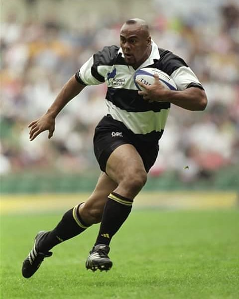

In the 1995 rugby world cup semi-finals held in south Africa, (England vs Allblacks) a 19 year old kid received a pass behind him, beat two defender and then ran straight over the top of Mike catt leaving a Newzealand commentator in gasps to score the first the try of the match. "He is an animal the sooner he goes the better." Said England's captain after the game
Jonah Tali Lomu was born on 12 may 1995 in Auckland Newzealand, When he was about 1 year old he was sent to live with his mothers relatives in Tonga for a while an act which made Lomu feel disowned later in life. Back in auckland Lomu had a hard time growing up and got into trouble severally. Drinking, gang fights even stealing were all on the menu.His mother got worried about him after his uncle was hacked to death by a machete and sent him to wesley colledge a school which was known for rugby and discipline, twelve months later in a all black jersey he was making pro adults look like amateurs

Lomu started his career as a flunker and later switched to the wing, he represented newzealand in the national under 19 side in 1993 and the under 21. He went on to be selected to play for the all blacks in 1995 world cup despite 2 all black caps. (was voted best player in the 1995 world cup @ the age of 19) He scored 7 tries in 5 matches but unfortunately Newzealand lost to South Africa the hosts. His high perfomance drew large crowds who all wanted to witness plays of a life-time.
He was the first rugby global super star and this brought him fame and money at a very young age, he made an estimate of 1million dollars during the 1995 worldcup and over 10million dollars during his short six year career. Lomu was a very special player, with very many abilities including having the ability to beat his father @ the age of 15 (we will talk more about this in an upcoming article). He was very tall and heavy (120kgs) but this dint stop him from sprinting faster than almost everyone on this planet, he used his massive size and power to run over other payers as if they were small kids. If you have watched his highlights you are likely to think he the strongest person to have ever lived, he always found a way of makeing opponents look effectiveless. He played for Counties manukau, Blues, Chiefs, hurricanes, wellington and many more other clubs, he even got a proposal from the NFL but turned it down
In 1996 he was diagnised with a serious kidney disorder which saw him take a brake from the sport, in 2000 a match he played attracted a crowd record of 109,874 fans and was labelled match of the centuary, he also won the 2001 7s worldcup filling in for rush who had suffered a broken leg. He played his last international matches in 2002 as his kidney condition got worse and needed a transplant
He tried to make a come back to professional rugby in 2005 and later retired in 2007 but continued to play charity matches. He took part in a body building contest in 2009 and finished second,cleary he was a very talented athlete.
On November 2015 jonah lomu died as a result of a heart attack which was caused by his kidney condition in Auckland, despite making a lot of money during his career lomu died with very little cash its believed that his money was absorbed by his 3 divources, medical bills and failed business ventures.
Jonah lomu is the greastest player to have ever played rugby if you ask me. With out of this world athletic capabilities, Lomu was at times un-deffendable and taking in concideration he perfomed with a very serious medical condition, one of his perfomances was voted top 100 moments in sports
He has been compared with the likes of Muhammad Ali and Tiger woods he is the pele of ruby, no other player has managed to even come close to lomu's succes not even well trained and supplimented players of today, The IRB and rugby hall of famer lent his name to severall video games and had many endorsements with many brands like no other rugby player of his time, it will take a long time for us to see footballers like messi and ronaldo but might never see a a gifted beast of an athleat like lomu